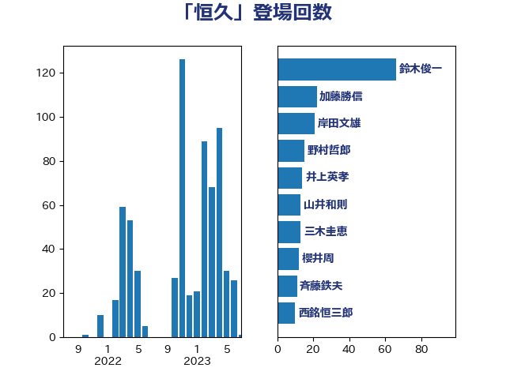

単語「恒久」

| 斉藤鉄夫 | 公明党 | 10 回 |
| 田村まみ | 国民民主党 | 10 回 |
| 田村憲久 | 自由民主党 | 10 回 |
| 西銘恒三郎 | 自由民主党 | 10 回 |
| 笠井亮 | 日本共産党 | 7 回 |
| 梅村聡 | 日本維新の会 | 6 回 |
| 梶山弘志 | 自由民主党 | 6 回 |
| 坂本哲志 | 自由民主党 | 5 回 |
| 小西洋之 | 立憲民主党 | 5 回 |
| 山井和則 | 立憲民主党 | 5 回 |
| 林芳正 | 自由民主党 | 5 回 |
| 猪口邦子 | 自由民主党 | 5 回 |
| 田村貴昭 | 日本共産党 | 5 回 |
| 菅義偉 | 自由民主党 | 5 回 |
| 高橋千鶴子 | 日本共産党 | 5 回 |
| 伊波洋一 | 無所属 | 4 回 |
| 小田原潔 | 自由民主党 | 4 回 |
| 平木大作 | 公明党 | 4 回 |
| 後藤茂之 | 自由民主党 | 4 回 |
| 末松信介 | 自由民主党 | 4 回 |
| 浅野哲 | 国民民主党 | 4 回 |
| 浜口誠 | 国民民主党 | 4 回 |
| 浦野靖人 | 日本維新の会 | 4 回 |
| 礒崎哲史 | 国民民主党 | 4 回 |
| 井上哲士 | 日本共産党 | 3 回 |
| 大野泰正 | 自由民主党 | 3 回 |
| 山本香苗 | 公明党 | 3 回 |
| 岸真紀子 | 立憲民主党 | 3 回 |
| 川田龍平 | 立憲民主党 | 3 回 |
| 武田良太 | 自由民主党 | 3 回 |
| 池畑浩太朗 | 日本維新の会 | 3 回 |
| 清水貴之 | 日本維新の会 | 3 回 |
| 田中健 | 国民民主党 | 3 回 |
| 田名部匡代 | 立憲民主党 | 3 回 |
| 竹内真二 | 公明党 | 3 回 |
| 美延映夫 | 日本維新の会 | 3 回 |
| 赤羽一嘉 | 公明党 | 3 回 |
| 進藤金日子 | 自由民主党 | 3 回 |
| 鈴木俊一 | 自由民主党 | 3 回 |
| 鈴木敦 | 国民民主党 | 3 回 |
| 中曽根康隆 | 自由民主党 | 2 回 |
| 丸川珠代 | 自由民主党 | 2 回 |
| 井上英孝 | 日本維新の会 | 2 回 |
| 古川元久 | 国民民主党 | 2 回 |
| 吉田統彦 | 立憲民主党 | 2 回 |
| 和田有一朗 | 日本維新の会 | 2 回 |
| 小沼巧 | 立憲民主党 | 2 回 |
| 山口那津男 | 公明党 | 2 回 |
| 岩渕友 | 日本共産党 | 2 回 |
| 岸田文雄 | 自由民主党 | 2 回 |
| 新妻秀規 | 公明党 | 2 回 |
| 本庄知史 | 立憲民主党 | 2 回 |
| 本村伸子 | 日本共産党 | 2 回 |
| 永岡桂子 | 自由民主党 | 2 回 |
| 河野太郎 | 自由民主党 | 2 回 |
| 泉健太 | 立憲民主党 | 2 回 |
| 玉木雄一郎 | 国民民主党 | 2 回 |
| 石井啓一 | 公明党 | 2 回 |
| 石井章 | 日本維新の会 | 2 回 |
| 稲富修二 | 立憲民主党 | 2 回 |
| 穀田恵二 | 日本共産党 | 2 回 |
| 茂木敏充 | 自由民主党 | 2 回 |
| 西岡秀子 | 国民民主党 | 2 回 |
| 里見隆治 | 公明党 | 2 回 |
| 野田聖子 | 自由民主党 | 2 回 |
| 金子恵美 | 立憲民主党 | 2 回 |
| 高橋光男 | 公明党 | 2 回 |
| 三原じゅん子 | 自由民主党 | 1 回 |
| 中根一幸 | 自由民主党 | 1 回 |
| 中谷一馬 | 立憲民主党 | 1 回 |
| 中野洋昌 | 公明党 | 1 回 |
| 亀岡偉民 | 自由民主党 | 1 回 |
| 今井絵理子 | 自由民主党 | 1 回 |
| 伊佐進一 | 公明党 | 1 回 |
| 伊藤俊輔 | 立憲民主党 | 1 回 |
| 伊藤孝恵 | 国民民主党 | 1 回 |
| 伊藤孝江 | 公明党 | 1 回 |
| 佐々木さやか | 公明党 | 1 回 |
| 倉林明子 | 日本共産党 | 1 回 |
| 冨樫博之 | 自由民主党 | 1 回 |
| 古川俊治 | 自由民主党 | 1 回 |
| 吉田宣弘 | 公明党 | 1 回 |
| 塩川鉄也 | 日本共産党 | 1 回 |
| 大口善徳 | 公明党 | 1 回 |
| 大河原まさこ | 立憲民主党 | 1 回 |
| 大西健介 | 立憲民主党 | 1 回 |
| 室井邦彦 | 日本維新の会 | 1 回 |
| 宮崎政久 | 自由民主党 | 1 回 |
| 宮本岳志 | 日本共産党 | 1 回 |
| 宮本徹 | 日本共産党 | 1 回 |
| 小宮山泰子 | 立憲民主党 | 1 回 |
| 小沢雅仁 | 立憲民主党 | 1 回 |
| 山田美樹 | 自由民主党 | 1 回 |
| 山際大志郎 | 自由民主党 | 1 回 |
| 岡本あき子 | 立憲民主党 | 1 回 |
| 岡田克也 | 立憲民主党 | 1 回 |
| 平沢勝栄 | 自由民主党 | 1 回 |
| 後藤祐一 | 立憲民主党 | 1 回 |
| 徳永久志 | 立憲民主党 | 1 回 |
| 打越さく良 | 立憲民主党 | 1 回 |
| 斎藤嘉隆 | 立憲民主党 | 1 回 |
| 新垣邦男 | 立憲民主党 | 1 回 |
| 早稲田ゆき | 立憲民主党 | 1 回 |
| 末松義規 | 立憲民主党 | 1 回 |
| 杉尾秀哉 | 立憲民主党 | 1 回 |
| 柳ヶ瀬裕文 | 日本維新の会 | 1 回 |
| 森屋隆 | 立憲民主党 | 1 回 |
| 横山信一 | 公明党 | 1 回 |
| 橋本岳 | 自由民主党 | 1 回 |
| 浅田均 | 日本維新の会 | 1 回 |
| 浮島智子 | 公明党 | 1 回 |
| 牧島かれん | 自由民主党 | 1 回 |
| 田村智子 | 日本共産党 | 1 回 |
| 矢倉克夫 | 公明党 | 1 回 |
| 石川博崇 | 公明党 | 1 回 |
| 石橋通宏 | 立憲民主党 | 1 回 |
| 稲津久 | 公明党 | 1 回 |
| 稲田朋美 | 自由民主党 | 1 回 |
| 篠原豪 | 立憲民主党 | 1 回 |
| 芳賀道也 | 国民民主党 | 1 回 |
| 若松謙維 | 公明党 | 1 回 |
| 西村康稔 | 自由民主党 | 1 回 |
| 谷川とむ | 自由民主党 | 1 回 |
| 赤木正幸 | 日本維新の会 | 1 回 |
| 足立康史 | 日本維新の会 | 1 回 |
| 長谷川淳二 | 自由民主党 | 1 回 |
| 阿部知子 | 立憲民主党 | 1 回 |
| 青山繁晴 | 自由民主党 | 1 回 |
| 音喜多駿 | 日本維新の会 | 1 回 |
| 須藤元気 | 無所属 | 1 回 |
| 高木かおり | 日本維新の会 | 1 回 |
| 高良鉄美 | 無所属 | 1 回 |